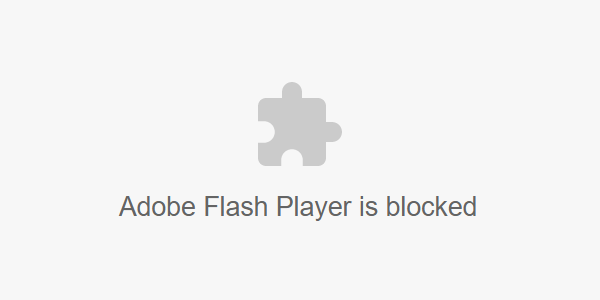

Официальный сайт Приключений Мопсов (Pug Adventure).
Приключения мопсов - Вебсериал, выпускаемый на Ютуб, на нашем дискорд и на этом сайте. Сериал рассказывает забавные истории с 4 мопсами: Ярик, Кирилл, Док. Егор и безымянный Мопс в капюшоне. Пока что вышло 3 эпизода - Pilot, Где наши подарки и Свинья на верху..
